|
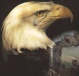 |
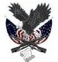 |
ATTACK ON AMERICA! MEMORIAL SITE THE HEROES ON FLIGHT 93 |
|
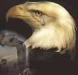 |
| View Attack on America Guestbook |
Compiled By: Jeff Head free hit counter UPDATED OCT 5, 2011 |
Sign Attack on America Guestbook |
CLICK HERE TO DOWNLOAD AND LISTEN TO NEIL YOUNG'S "LET's ROLL" SONG (MP3-7Mb)
|
THE HEROES OF FLIGHT 93 AND HOW THEY HELPED FOIL AN ATTACK ON THE CAPITOL The terrorists used knives and box cutters to commandeer the three airplanes and then crash them into the World Trade Center and the Pentagon. They also indicated that they had bombs. GTE Airphone calls from the hijacked aircraft indicated that the terrorists, who numbered between three and six on each aircraft, would take control of the aircraft by taking a stewardess or passenger and either threatening, or actually cutting or stabbing them, and then take control of the aircraft when the crew came out to investigate or negotiate. The terrorists then installed their own pilot and herded passengers and crew to the back of the plane. A fourth jet had also been hijacked, United Airlines Flight 93, with forty-four ppassengers and crew on board. Somewhere near Cleveland, OH, this aircraft turned around and headed for Washington, DC after having been commandeered by more terrorists. The terrorists indicated to the passengers that they planned to crash it into the capitol building. On board this aircraft, several passengers, after hearing what was occurring, had the chance to call their loved ones on GTE Airphones and discover the other horrific activities of the day. They discovered that other terrorists actually were crashing airliners loaded with passengers into the World Trade Center and the Pentagon.
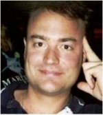 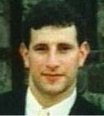 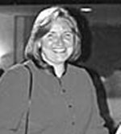 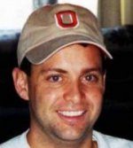 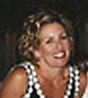 Five of the American heroes, Tom Burnett, Jeremy Glick, Linda Gronlund, Todd Beamer and Sandra Bradshaw Tom Burnett's phone call: A man named Tom Burnett called his wife in California the plane. He was the Chief Operating Officer in a small company in Pleasanton, CA. He was the father of three children. Here is what he told his wife (paraphrased).
Our flight has been hijacked. The terrorists have knives and have stabbed someone. They indicate they are going to crash our plane into the capital building in Washington, DC.Jeremy Glicks Phone call: Jeremy Glick, traveling on the same flight also called his wife. Jeremy was 6'-2" tall and weighed 220 pounds, he was former college Rugby player and excelled in Judo. Here is what he told his wife (paraphrased): "Honey, it’s bad news."Linda Gronlund's Phone Call One of the women passengers on the plane, Linda Gronlund, was with her boyfriend, Joseph DeLuca. They were flying to California to celebrate Linda's 47th birthday the next day by visiting vineyards. Linda was a lawyer for BMW in Montvale, NJ. She was also a marine chemist, had a brown belt in karate, sailed, was an avid auto mechanic and went scuba diving. From the plane, she called her younger sister, and best friend, Elsa. Here is the paraphrased account of that conversation. "Elsa, we have been hijacked and we know about the World Trade Center."Todd Beamer's Phone Call Another man, Todd Beamer made a call and spoke to a GTE supervisor regarding these same events. In that call, Beamer, 32, an Oracle Inc. executive from Hightstown, N.J, told Lisa Jefferson, that he and others on the plane had decided they would not be a part of the hijackers' plans. Jefferson had informed him about the other hijackings. Beamer made her promise to call his wife and their two boys, David, 3, and Andrew, 1 and let them know he loved them. Beamer's call connected at 9:45 a.m. Here is his paraphrased account. Sandra Bradshaw's phone call: One of the Flight attendants, Sandra Bradshaw, was also involved with the plan to take back the aircraft. Bradshaw, an energetic 38-year-old Greensboro flight attendant, called her husband, Phil, to let him know what was happening. She knew, from other passenger calls, that their plane was now really a guided missile. Here is the paraphrased dialog they had:
"Have you seen what's happening? Have you heard? We've been hijacked."Investigators reviewing all of the evidence, including the cockpit recording, are now operating under the premise that the passengers made their way 110 feet from the rear of the plane to the cockpit, taking out the hijacker claiming to have the bomb along the way. They then stormed the cockpit. The last transmissions on the cockpit recording picked up the sounds of a struggle, of the crash of dishes, a man’s voice screaming loudly. The hijackers are heard calling to each other to hold the door. One of the passengers yells, “Let’s get them!” and then more crashing and screaming. One hijacker tells his confederates that the end is near. The hijackers hurriedly talk about finishing off the plane as the intensity of the struggle grows, and at this point the plane begins to dive. One of the hijackers cry out, “Allah Akbar!” The cockpit voice recorder picks up more shouting by one of the male passengers. . The hijackers apparently begin to fight among themselves for the controls, demanding, “Give it to me.” ... then silence. ... United Airline Flight 93 had plunged nose first into a field about eighty miles south of Pittsburgh, PA, near Shanksville leaving a crater almost fifty feet deep. Nothing was left except the thousands of small charred pieces of the exploded aircraft for officials to sift through.
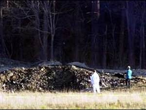 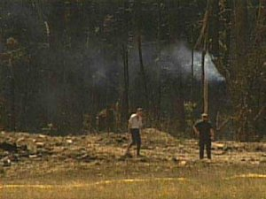 Due to the heroic efforts of these few brave Americans, and perhaps due to other causes, that fourth plane never made it to the terrorists intended destination and hundreds, perhaps thousands, of additional lives were spared. In any case, because they did resist and took positive action to fight the terrorists, those passengers are heroes, and represent the true spirit of America when faced with such trials.
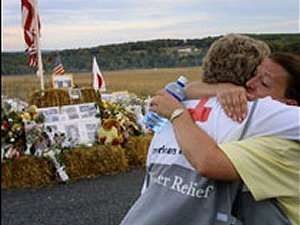 A memorial service was held near the site of the crash a few days later. A haystack memorial was set up where those visiting could leave remeberances. Laura Bush, the Fisrt Lady attended with many of the families. The site of the crash should be made a full National Monument in tribute to the courage, determination and bravery of these individuals, and so that all Americans can know of their heroic struggle and sacrifice, and so that we all can remember that liberty has a dear price. A petition to Congress that effect,to establish a National Monument at the Crash site of Flight 93, has been started.
Jeff Head
Click Here for a site dedicated to remembering the many heroes of 911 |